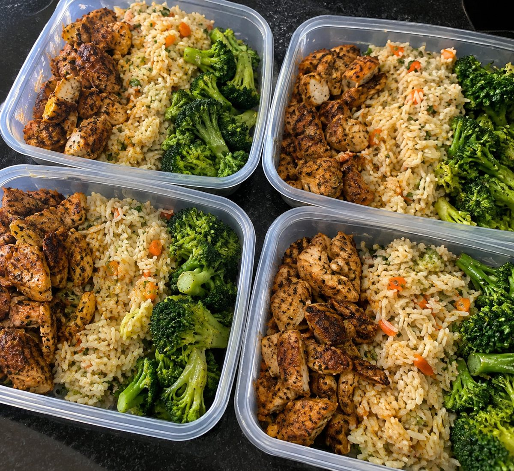

32g protein
Chicken & Rice Power Bowl
20 min prep · 510 kcal
High-protein, low-calorie recipes built for real weeks — no guesswork, no mystery calories.

25 min

15 min

30 min · 6 servings
28 min

10 min · makes 12

5 min
Seared steak bites finished in garlic butter, spooned over broccoli rice — this is the bowl we reach for when the week has been long and the fridge needs to earn its keep. It comes together in one pan, holds up well through four days of reheats, and hits a protein number that actually keeps you full.
Swap the broccoli rice for regular rice or cauliflower rice depending on what you're working with. The garlic butter is the part worth not skipping — it's what turns a plain seared steak into something you'd order at a restaurant.